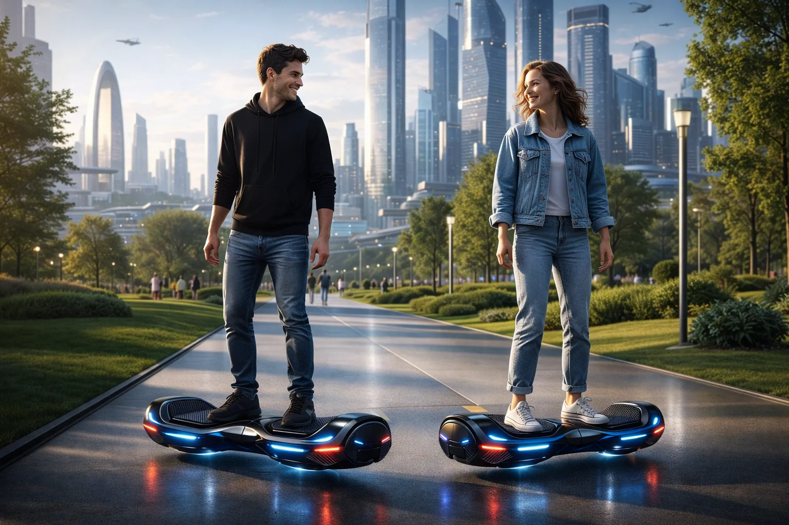

Iconografía del futuro
Una silueta instantáneamente reconocible, con líneas de neón, curvas imposibles y un lenguaje visual heredero de la gran fantasía tecnológica del cine.
HoverOne X recupera la fantasía mecánica del mañana y la convierte en una pieza de deseo: silueta flotante, luz cinética y una presencia retrofuturista pensada para dejar huella en cada salida.

HoverOne X nace para quienes no quieren pasar desapercibidos: una máquina visual, precisa y magnética, concebida para convertir cada desplazamiento en una escena memorable.
Una silueta instantáneamente reconocible, con líneas de neón, curvas imposibles y un lenguaje visual heredero de la gran fantasía tecnológica del cine.
Sensores de equilibrio, asistencia dinámica y respuesta fina para transformar la conducción en una experiencia fluida, ágil y sorprendentemente intuitiva.
Las primeras unidades estarán disponibles únicamente para quienes consigan plaza en el acceso prioritario del lanzamiento.
HoverOne X ha sido concebido para quienes buscan una pieza con personalidad propia, brillo de culto y una energía capaz de convertir cualquier trayecto en un pequeño acontecimiento.